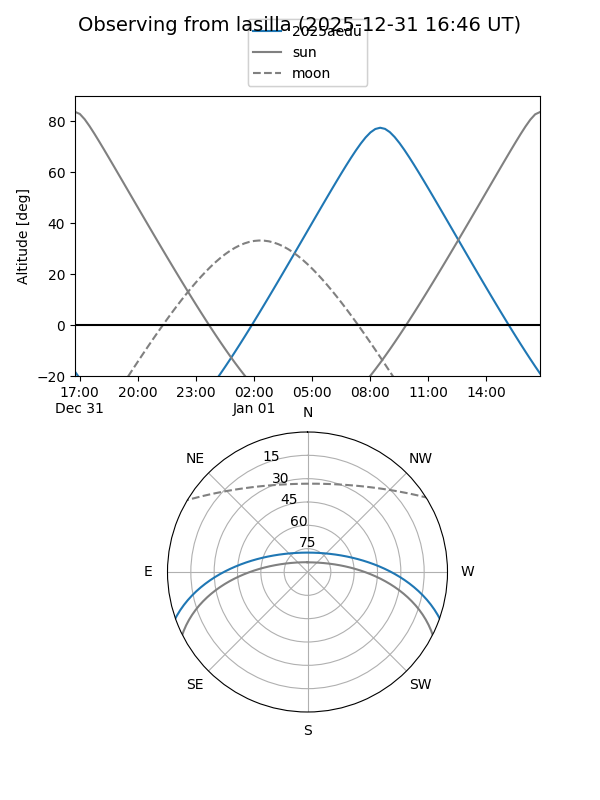
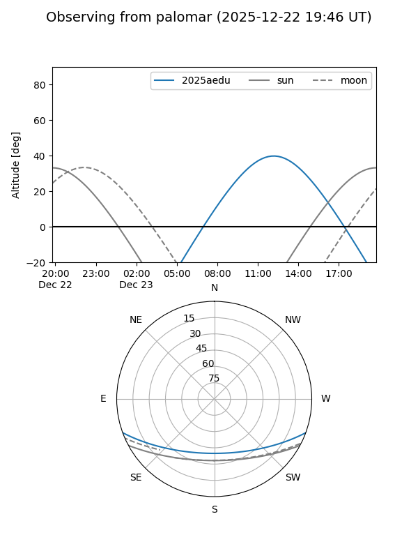
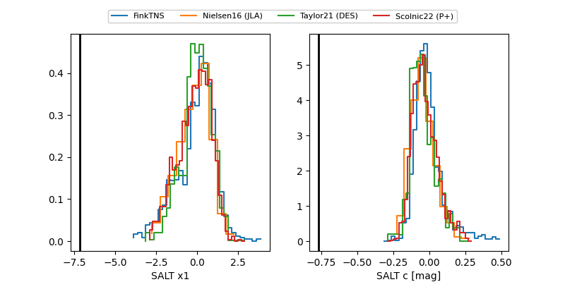

2025aedu
Target 2025aedu at 2025-12-18 11:18
Aliases and brokers:
FINK: fink-portal.org/ZTF25acglouc
Lasair: lasair-ztf.lsst.ac.uk/objects/ZTF25acglouc
ALeRCE: alerce.online/object/ZTF25acglouc
TNS: wis-tns.org/object/2025aedu
YSE: ziggy.ucolick.org/yse/transient_detail/2025aedu
alt names
ZTF25acglouc (ztf,fink_ztf)
2025aedu (tns,yse)
ATLAS25oqv (atlas)
Coordinates:
equatorial (ra, dec) = 157.8396,-16.65603
equatorial (HMS+DMS) = 10:31:21.51,-16:39:21.70
galactic (l, b) = (261.0371,+34.58174)
Photometry
last ztfg=19.35
2 ztfg detections
Lightcurve

Visibility


Additional plots
